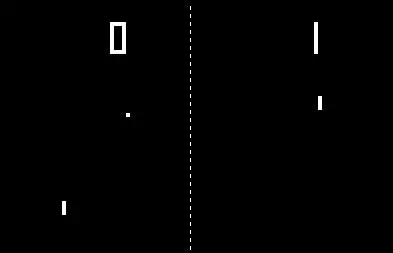
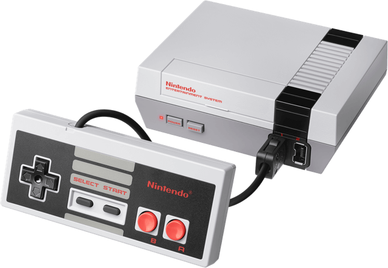
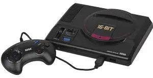
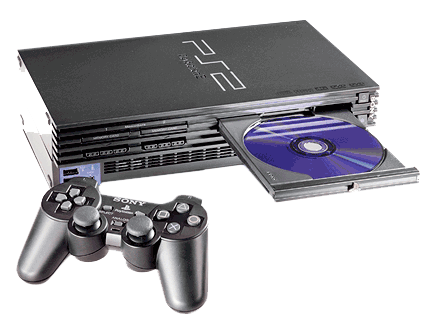

The 1970s
The dawn of video games began with classics like Pong (1972), sparking the arcade revolution.

The 1980s
The rise of home consoles like the NES brought gaming into households worldwide.

The 1990s
Sega Genesis and PlayStation defined the decade, introducing iconic franchises and 3D gaming.

The 2000s
PlayStation 2 became the best‑selling console of all time, while online gaming grew rapidly.
